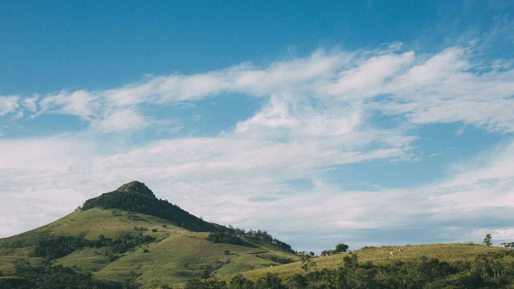
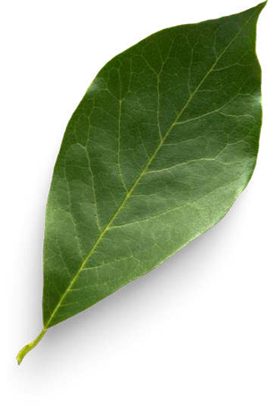
Une plateforme de photographie nature qui réunit ce que les autres séparent : l'inspiration, l'apprentissage technique et une communauté qui donne du retour.
OJO Nature est une plateforme en ligne dédiée à la photographie de nature : des galeries qui donnent envie de sortir, et des conseils, techniques et astuces pour les amateurs qui veulent progresser.
Le pari du projet : ces deux besoins ne sont pas séparés. On cherche une belle image, puis on veut savoir comment elle a été prise. Aucune plateforme observée ne tient les deux bouts.
Questionnaire en ligne auprès de photographes nature, complété par l'analyse de forums spécialisés et l'observation des hashtags Instagram.
— Manque de retour personnalisé sur les photos
— Besoin d'inspiration ciblée, avec les réglages techniques
— Envie d'une communauté bienveillante et active
— Usage majoritairement sur smartphone
Formats courts et visuels : la démonstration l'emporte sur l'article long. Le mobile impose des séquences brèves, consultables entre deux moments.
Comment concevoir une plateforme de photographie nature qui permette d'apprendre facilement, de s'inspirer et d'interagir avec une communauté — à travers une expérience fluide, intuitive et adaptée au mobile ?
Chacune excelle sur un axe et abandonne les autres. L'espace laissé libre est exactement celui du projet.
Photographe amateur. Sa journey map a servi de fil : à chaque étape, un point de friction, et la réponse qu'il appelle.
Via un forum photo ou un hashtag Instagram.
Il explore les galeries, lit les conseils, compare avec 500px et NatGeo.
Newsletter puis compte, pour sauvegarder ses photos préférées.
Il poste dans la communauté et participe à un défi photo.
Abonnement premium, masterclasses, parrainage d'un ami.
Réponse 1 — une fiche technique sous chaque photo : réglages, matériel, conditions.
Réponse 2 — des mentors et des défis filtrés par niveau, pour que le retour existe.
Réponse 3 — un essai premium et un calendrier de masterclasses annoncé à l'avance.
Interface sombre : sur un site de photographie, le fond disparaît et l'image reste. Les écrans sont présentés sans cadre d'appareil, comme des tirages.
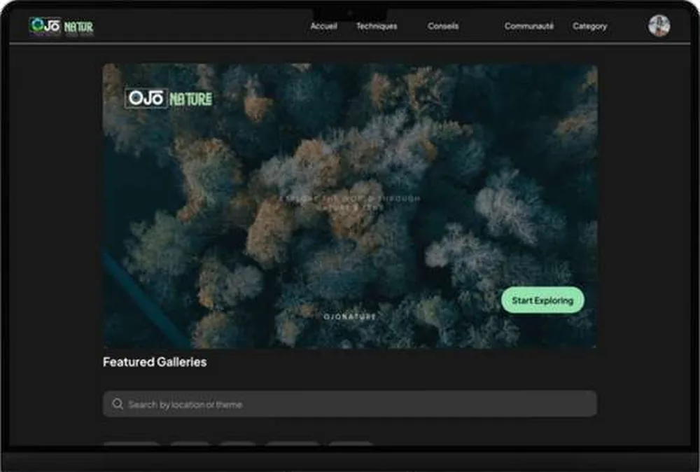
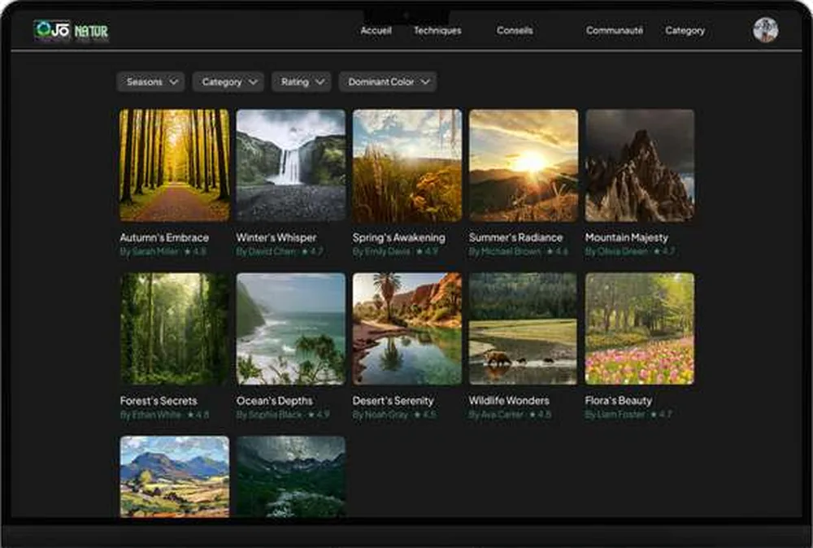
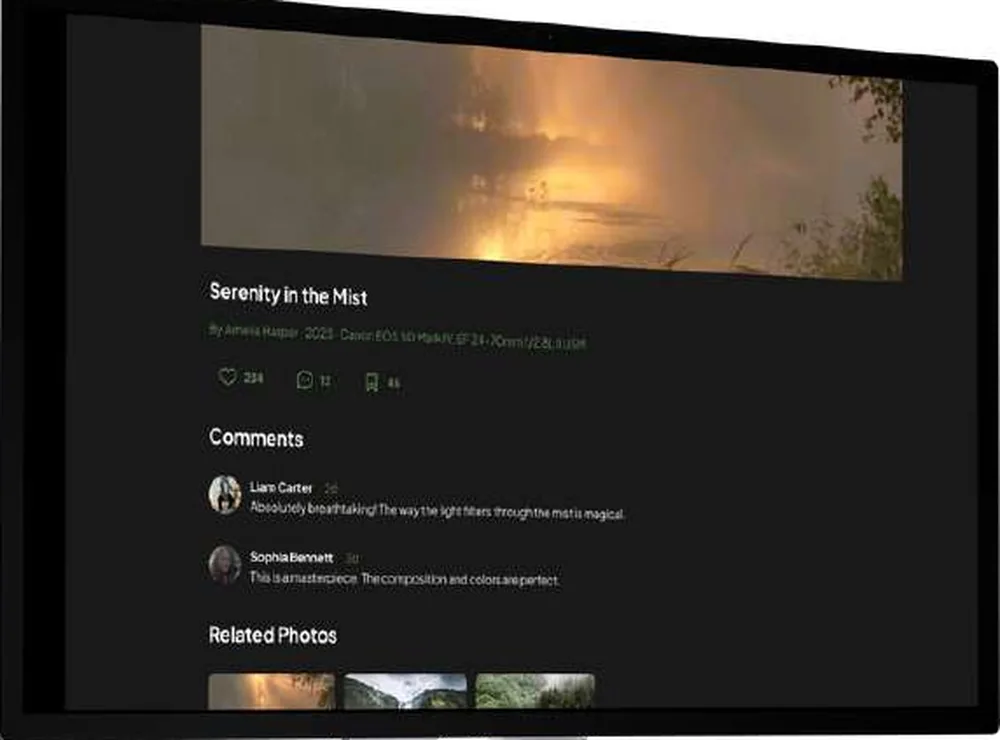
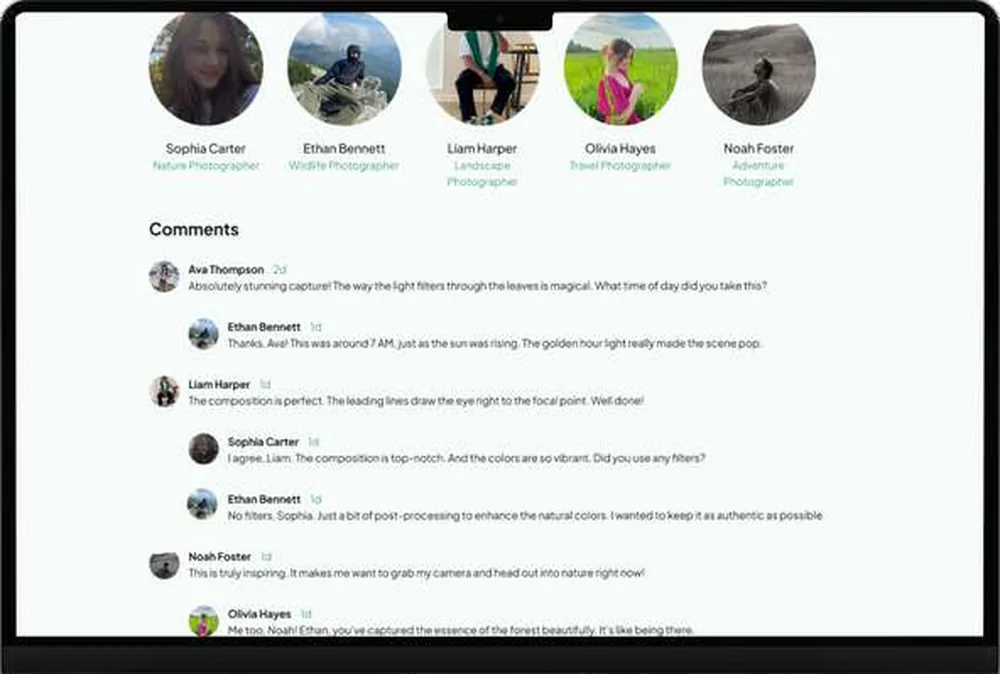
Sous chaque photo : auteur, année, boîtier, focale, ouverture, vitesse. La recherche disait « besoin d'inspiration ciblée avec les réglages techniques » — c'est cette ligne qui transforme une galerie en support d'apprentissage, et elle ne coûte qu'un bandeau de texte.
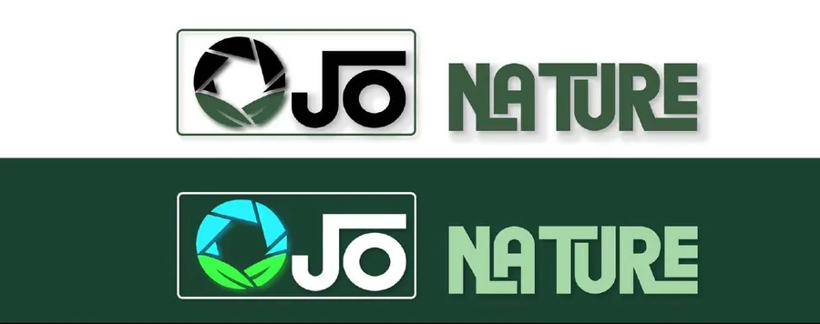
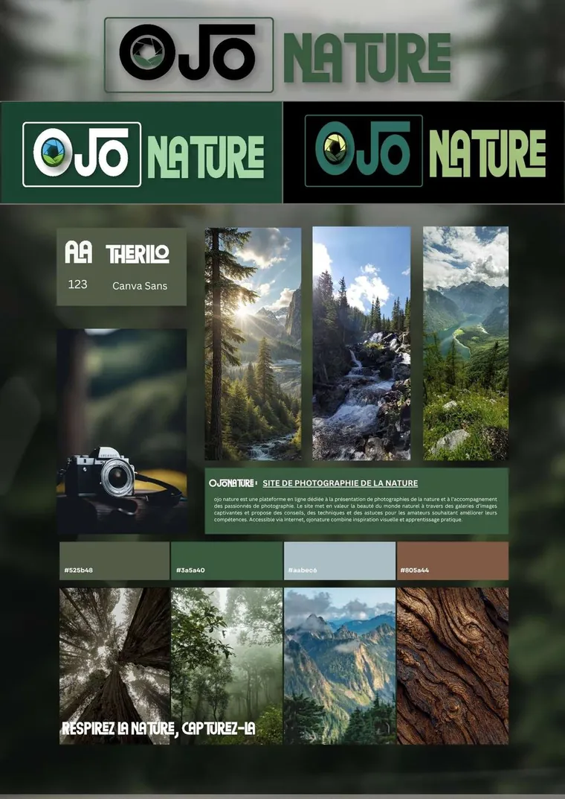
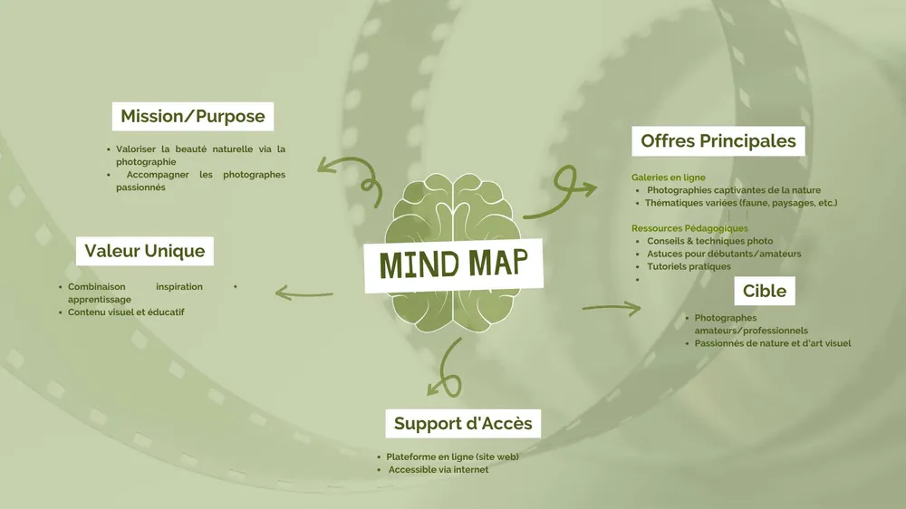
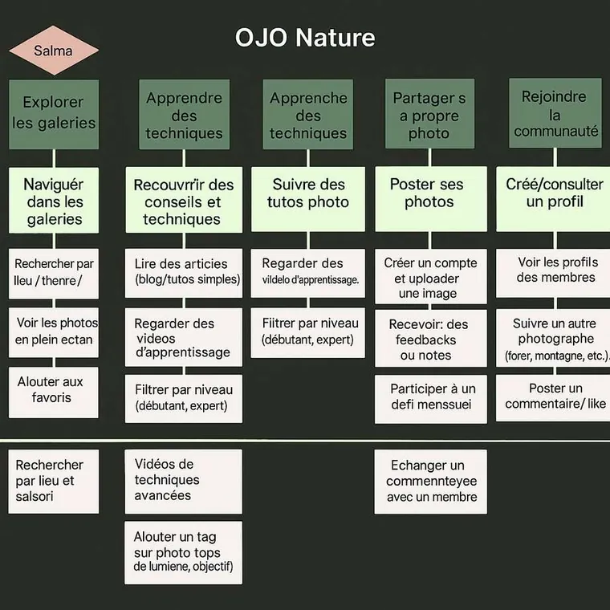
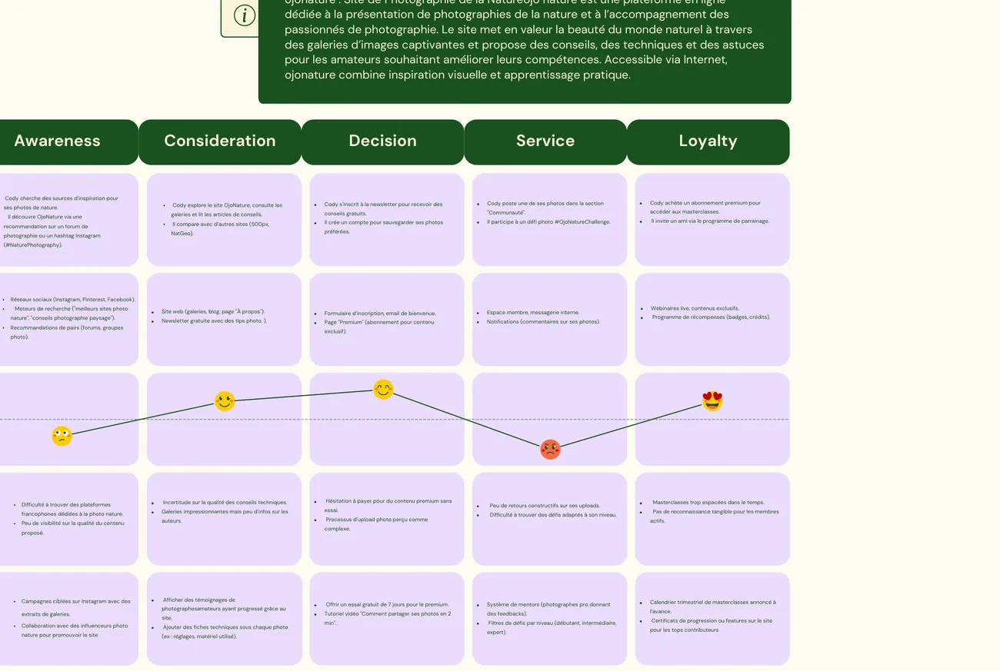
Le prototype existe, les tests utilisateurs sont la dernière étape du planning. Ces trois indicateurs restent donc à mesurer — aucun chiffre de résultat n'est avancé ici.
Temps passé sur la fiche photo et taux de dépliement des réglages : la promesse d'apprentissage tient à ce geste.
Part des photos publiées qui reçoivent au moins un commentaire construit dans les 48 h.
70 % des répondants consultent sur smartphone : c'est là que la galerie doit rester fluide.